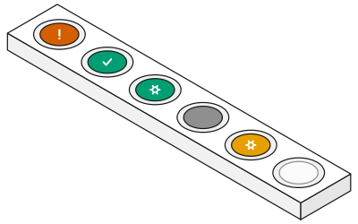
An always-on-top bar with one light per session, in launch order, so each session keeps its place. Pin it to the top-right corner; it follows the screen you're working on.
一个始终置顶的灯条，每个会话一盏灯，按启动顺序排，位置不会乱跳。可以吸附在屏幕右上角，还会跟着你正在用的屏幕走。
Claude Lights turns every Claude Code session on your Mac into one status light — waiting for you, working, or done. Click a light and you're in that session's terminal.
Claude Lights 把你 Mac 上的每个 Claude Code 会话变成一盏状态灯：在等你、在干活、已完成。点一下灯，就直接跳到那个会话的终端。
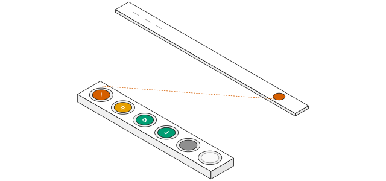
There are already plenty of tools for running many Claude Code sessions at once. Herdr is one. Claude Code itself has agents and can list everything that's running. I like Herdr, and Claude Lights supports it.
But these tools all show their status in the same place: inside a terminal. Herdr runs in a terminal, so its status only shows up there. The moment you switch to a browser to work on a web page, the terminal is covered and you can't see what your sessions are doing.
Claude Lights lives one level up, on the desktop. Its light bar stays always on top and takes almost no screen space. Whatever you're doing — even working in a browser — you see when a session changes state, and you get a notification when one needs you.
It also fits how I work. To me, tmux is a great platform: anything I need can be added on top of it. When I started Claude Lights, Herdr didn't exist yet. So Claude Lights isn't another place to move into. It's a small add-on that runs on your system, next to the tools you already use. As a standalone add-on, I think it more than holds its own.
现在已经有很多工具可以同时管理一堆 Claude Code 会话。比如 Herdr；Claude Code 自己也有 Agent，能把所有正在跑的东西列出来。我是支持 Herdr 的，Claude Lights 也支持它。
但这些工具都把状态显示在同一个地方：终端里。Herdr 本质上是跑在终端里的，所以它的状态也只显示在终端里。你一切到浏览器去做网页，终端就被挡住了，看不到各个会话在干什么。
Claude Lights 待在更高一层：桌面上。它的灯条始终显示在最上面，几乎不占屏幕空间。不管你在做什么，哪怕是在浏览器里做网页，会话状态一变你就能看到；有会话在等你，你还会收到通知。
这也符合我的工作习惯。在我看来，tmux 是一个非常好的技术平台，需要什么都可以往上加。而且我开始做这个项目的时候，Herdr 还没有出来。所以 Claude Lights 不是又一个让你搬进去的地方，而是一个独立运行在系统上的小插件，待在你已有的工具旁边。作为一个独立的系统插件，我觉得它依然非常有竞争力。
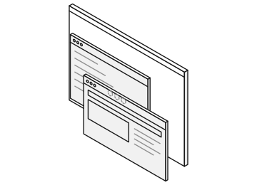
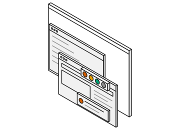
Using Herdr? Click a light and Claude Lights focuses that session's Herdr pane. Using tmux? It switches to the exact window and pane. 在用 Herdr？点一下灯，就会切到那个会话所在的 Herdr 窗格。在用 tmux？会直接切到对应的窗口和窗格。
Each state is shown twice — a colorblind-safe color and a glyph — so it reads clearly whatever your color vision. 每种状态都用两种方式表示：色盲也能分清的颜色，加一个符号。不管你怎么看颜色，都能认出来。
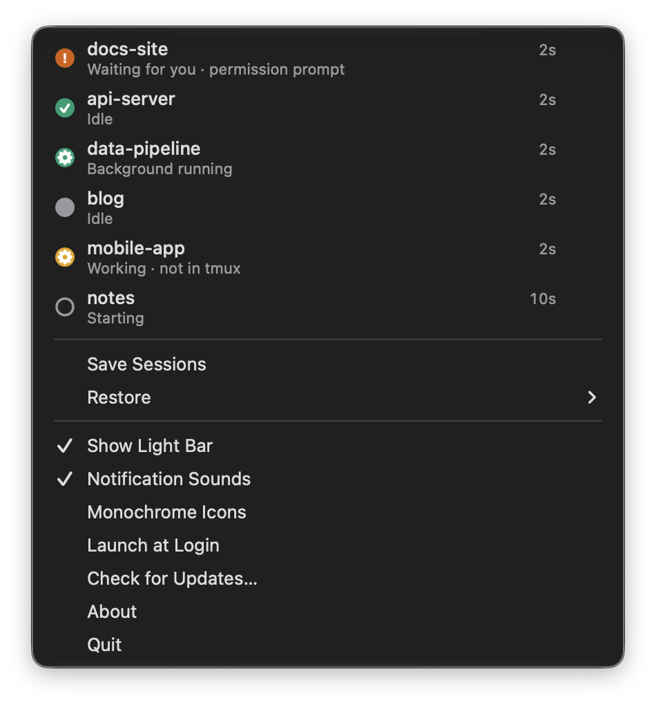

An always-on-top bar with one light per session, in launch order, so each session keeps its place. Pin it to the top-right corner; it follows the screen you're working on.
一个始终置顶的灯条，每个会话一盏灯，按启动顺序排，位置不会乱跳。可以吸附在屏幕右上角，还会跟着你正在用的屏幕走。
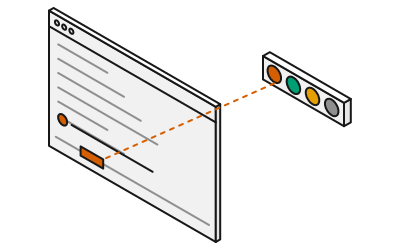
Click a light to switch tmux to that session's window and focus the exact iTerm2, Terminal, or VS Code window. Herdr panes work too.
点一下灯，tmux 就切到那个会话的窗口，并且把对应的 iTerm2、Terminal 或 VS Code 窗口调到最前面。Herdr 窗格也可以。
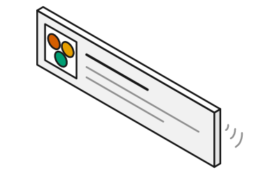
A banner and a sound when a session needs you or finishes — and silence when you're already looking at that window. Banners and sound each have their own switch under Notifications in the menu.
会话需要你、或者做完的时候，弹通知并响一声。如果你正看着那个窗口，就不打扰你。在菜单的 Notifications 里，弹窗和声音可以分开开关。
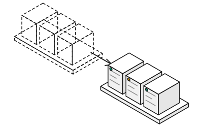
Save your tmux sessions — windows, panes, folders, and every Claude conversation — to iCloud Drive, then rebuild them after a reboot with claude --resume in each pane. Auto-save keeps a copy whenever things change.
把 tmux 会话（窗口、窗格布局、目录，以及里面每一个 Claude 对话）保存到 iCloud Drive。重启后一键重建，每个窗格自动运行 claude --resume。开着自动保存的话，一有变化就存一份。
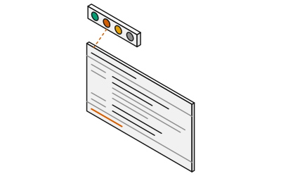
Right-click a light for that session's folder, status, how many commands it's running, where it runs, and its Claude Code version — plus a short summary: Claude's latest recap, or your last prompt.
右键点一盏灯，就能看到这个会话的目录、状态、正在跑几个命令、跑在哪里、Claude Code 版本，还有一段简短的总结：Claude 最近写的回顾，没有的话就是你最后发的那句话。
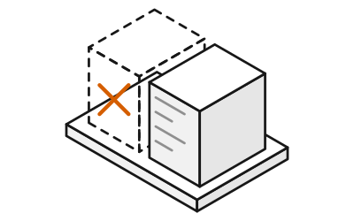
Pick Close from that menu (or hold ⌥ in the menu bar menu) and, after you confirm, Claude and the commands it started stop and its tmux pane closes. The other panes in that window stay open.
在这个菜单里点 Close（或者在菜单栏菜单里按住 ⌥），确认之后，Claude 和它启动的命令都会停掉，它所在的 tmux 窗格也会关掉。同一个窗口里的其他窗格不受影响。
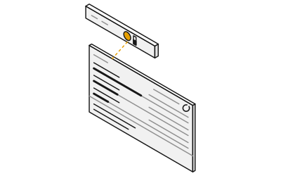
A small bar beside the menu bar dot fills up as your plan's 5-hour limit is used. The top of the menu shows what is left of it, of each weekly limit (like Fable) and of your extra-usage credit, with a button to refresh right away. It asks Claude Code itself every 30 minutes — no model call, no cost, and your login never leaves Claude Code.
菜单栏圆点旁边有一根小竖条，套餐的 5 小时额度用得越多，它就填得越满。菜单最上面列出 5 小时额度、每周额度（比如 Fable）和额外用量 credit 各还剩多少，旁边有个按钮可以立刻刷新。App 每 30 分钟直接问一次 Claude Code：不调用模型、不花钱，你的登录信息也不会离开 Claude Code。
Also: dims lights you've already seen, monochrome menu bar icons, launch at login, and one-click updates from GitHub Releases. 还有：看过的灯会自动变暗、单色菜单栏图标、开机启动，以及从 GitHub Releases 一键更新。
No macOS quarantine, and you can read what you run. Needs the Xcode command line tools.
不会被 macOS 隔离拦住，你也能看清自己运行的是什么。需要先装 Xcode 命令行工具。
git clone https://github.com/agate/claude-lights.git
cd claude-lights
scripts/bundle.sh
open build/ClaudeLights.app
Get ClaudeLights.zip from the latest release.
The app isn't notarized, so on first launch open System Settings → Privacy & Security and click
Open Anyway. After that it updates itself.
从最新发布下载 ClaudeLights.zip。
因为没有做 Apple 公证，第一次打开时要去系统设置 → 隐私与安全性，点仍要打开。之后它会自己更新。
Requires macOS 13+ and Claude Code 2.1.207 or later. tmux or Herdr is optional — it's only needed to jump to the exact pane. 需要 macOS 13 以上，以及 Claude Code 2.1.207 或更新版本。tmux 或 Herdr 不是必须的，只有跳到具体窗格时才需要。